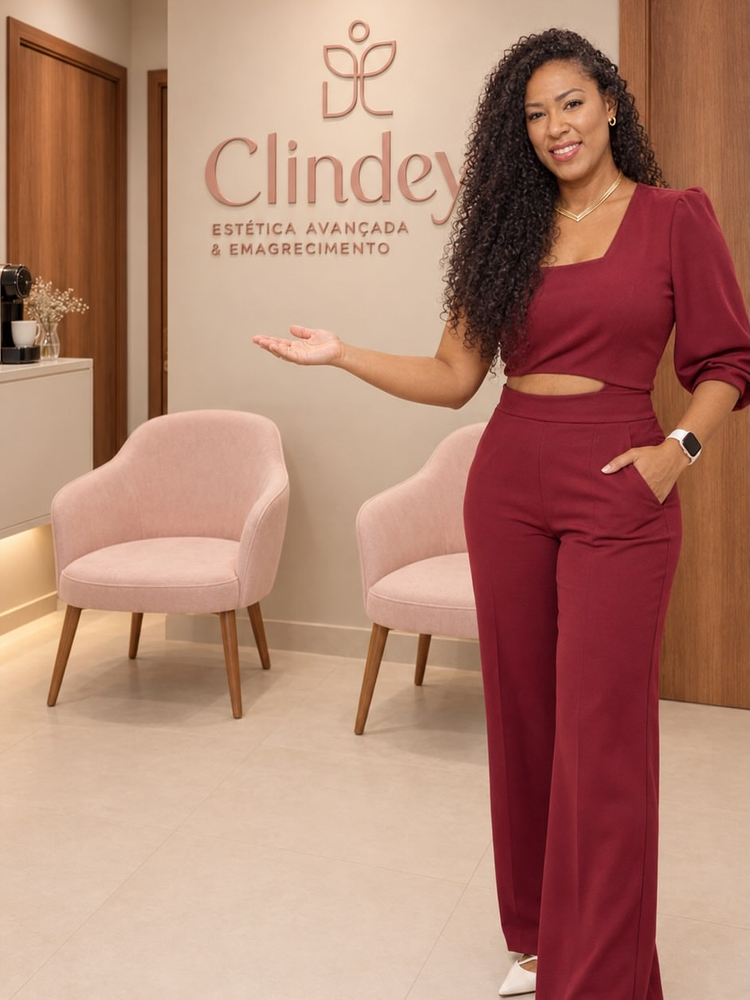

Estética premium para mulheres · Salvador
Beleza real,
vidas transformadas.
Emagrecimento e estética corporal com protocolos personalizados, criados pela Dra. Deyse Lima para o seu corpo — nunca um protocolo de prateleira.
- +10.000 pacientes
- Protocolos personalizados
- Mulher cuidando de mulheres
Na sala rosa da clínica: procedimento real, em paciente real.
O método dela
Método Pink Diamond
Para a Dra. Deyse, toda mulher carrega um diamante raro: ela mesma. O Pink Diamond é o protocolo que ela criou para lapidar esse diamante — autoestima, saúde e confiança, sem promessas milagrosas.
Até 2 números de roupa em 45 dias.
É a promessa que ela publica — e sustenta com avaliação individual, tecnologia e acompanhamento de perto, do primeiro dia à última sessão.
A Dra. Deyse conta, com as palavras dela, como o Pink Diamond nasceu.
Sua lapidação em 4 tempos
Avaliação personalizada
Tudo começa na avaliação: é nela que a Dra. Deyse entende o seu corpo — como a gordura se distribui, sua rotina, sua história e o seu objetivo.
Prova, não promessa
Resultados de verdade, mostrados por ela
No treinamento da equipe, ela apresenta os antes e depois das pacientes: perdas de 10 kg a 29 kg — com medição de cintura, dobras e bioimpedância na prática.
Nada aqui é banco de imagem. Cada resultado que a Clindey mostra é de uma paciente dela, acompanhada pela equipe dela — fisioterapia dermatofuncional e nutrição trabalhando juntas.
É por isso que o primeiro passo nunca é um pacote pronto: é a sua avaliação.
Quero minha avaliação“Estou realizando um sonho… tendo acesso a tratamento estético.”
Paciente da Clindey, em depoimento publicado pela clínica — ela conta que, antes, a baixa autoestima vinha do desconforto com o próprio corpo.
“Depoimento que aquece meu coração.” — Dra. Deyse, ao publicar o vídeo
Criodermys 2.0
Lipo sem cortes
A tecnologia do Método Pink Diamond para tratar o corpo sem cirurgia — apresentada por ela, na clínica dela.
Protocolos personalizados para:
- Diástase
- Pós-operatório
- Gordura localizada
- Flacidez
- Circulação
- Saúde da mulher
Seu nome escrito à mão na placa de boas-vindas, gift bag da clínica e robe rosa esperando por você.
Experiência premium
Você é recebida pelo nome
Na Clindey, o cuidado começa antes do procedimento. Cada cliente é esperada de forma personalizada — porque aqui, estética premium é, antes de tudo, ser tratada como única.
É o padrão que ela faz questão de mostrar: recepção preparada, equipe feminina de uniforme rosa e atenção a cada detalhe, da chegada à última sessão.

“Um dia orei por tudo o que eu tenho hoje…”Lettering da parede da clínica
Quem cuida de você
Dra. Deyse Lima — a Dra. Pink
A trajetória dela, contada por ela: de massoterapeuta à fundadora da Clindey.
Fisioterapeuta dermatofuncional e fundadora da Clindey. São 10 anos de carreira mudando a vida de centenas de mulheres — e mais de 39 mil seguidoras acompanham esse trabalho de perto.
A marca CLINDEY é registrada no INPI — fruto de um processo de dois anos que ela comemorou com as seguidoras. E ela segue à frente de tudo: é a Dra. Deyse quem avalia, quem cria os protocolos e quem aparece aqui, todos os dias.
- Fisio Mariana Andrade — coordenadora e fisioterapeuta da equipe
- Nutri Ingrid Bonfim — nutricionista, do acompanhamento e da bioimpedância
- Fabiano César — marido e cofundador da Clindey
A jornada até aqui
2015 · O começo
Deyse começa como massoterapeuta — o primeiro passo de uma carreira que ela construiria com as próprias mãos.
O primeiro passo
Quanto custa? Depende do seu corpo.
“Valor do procedimento?” — ela responde à câmera, sem rodeio.
Não existe um valor único — e ela faz questão de explicar o porquê: cada corpo distribui a gordura de um jeito; a Joana não é a Maria. O seu protocolo, e o valor dele, nascem na avaliação personalizada.
Monte sua mensagem e agende
Toque no seu objetivo e leve a mensagem pronta para o direct da clínica:
Olá, Dra. Deyse! Quero agendar minha avaliação na Clindey. Meu objetivo é: gordura localizada.
Também fora da clínica
Comunidade Florescer
Para cuidar de você todos os dias, onde você estiver: a comunidade online da Dra. Deyse, com o método Básico Bem Feito.
- Nutrição
- Hidratação
- Exercício
- Hábitos
R$ 19,90/mês
Quero entrar para a FlorescerA Dra. Deyse apresenta a comunidade no vídeo de lançamento.
Visite-nos
Passe aqui
Horários
- Terça a sexta · 8h às 19h
- Sábado · 8h às 14h
Agendamento pelo direct do Instagram: @clindeyestetica
A Dra. Deyse anunciando a escala atual da clínica.